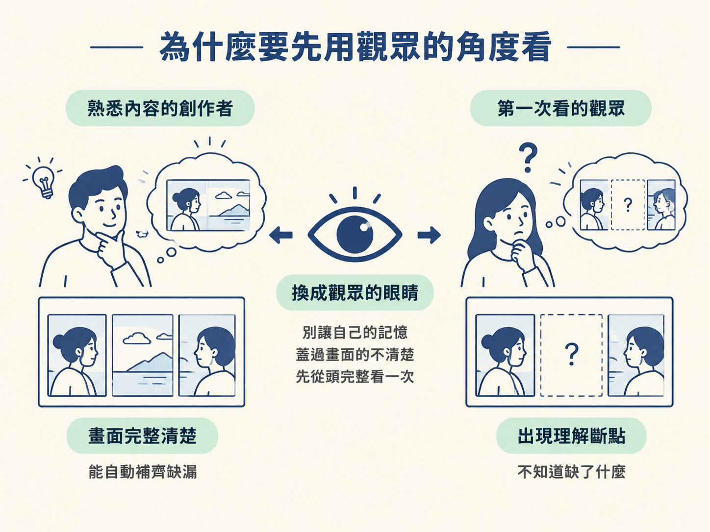
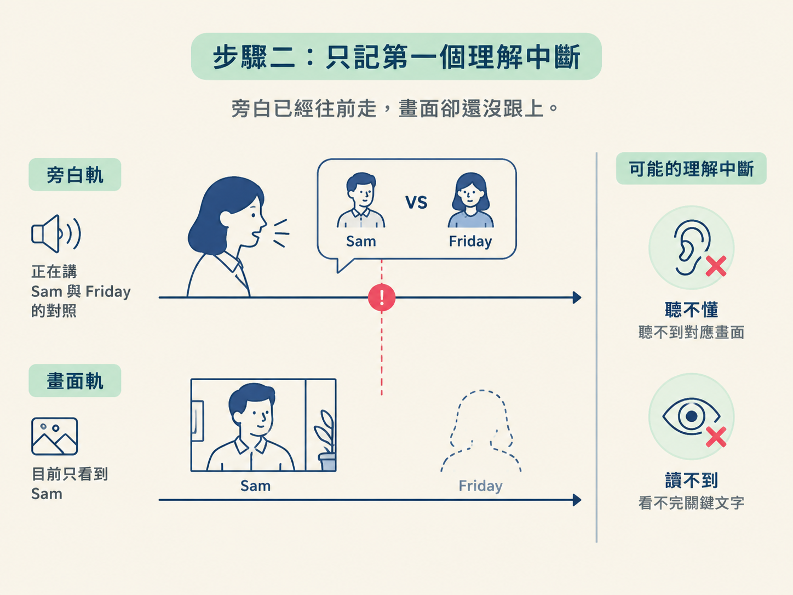
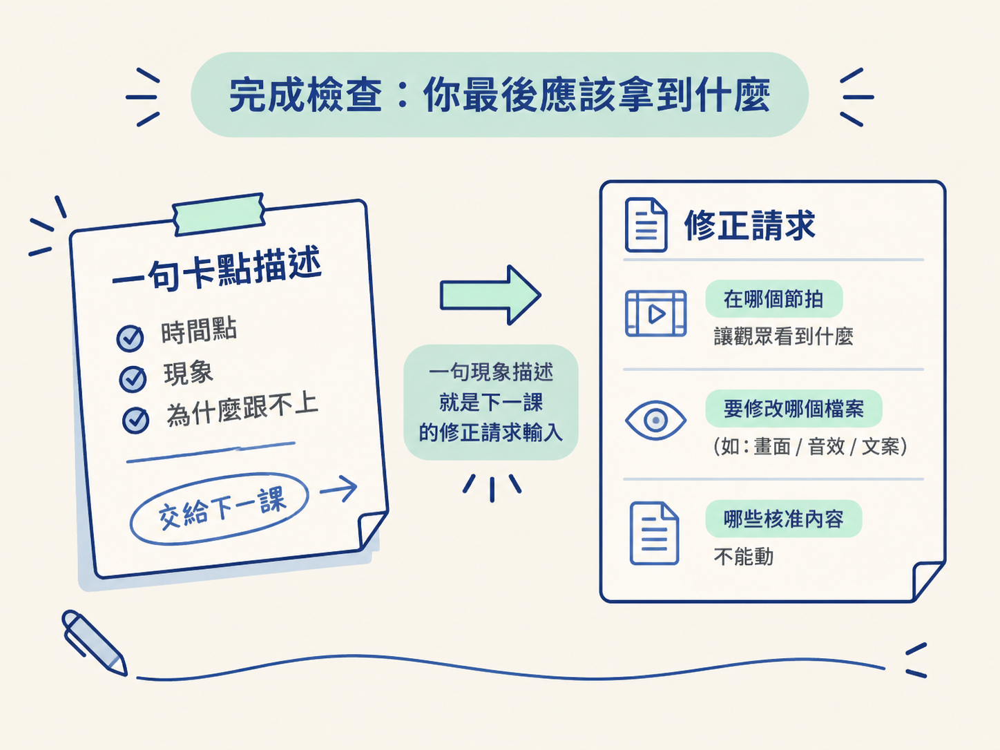

這一步位在「場景預覽完成、正式修正與匯出之前」。你會先把上一課完成的旁白預覽從頭播到尾，再記下第一個讓你聽不懂，或看不清楚旁白要你注意什麼的時刻。
輸入是一支可以正常播放、配著核准旁白的場景預覽。輸出不是修改後的影片，而是一句具體的卡點描述，交給下一課用來寫 AI 修正請求。
這一課請讓 AI 幫你開好預覽；你負責像第一次看到影片的觀眾一樣完整觀看，並判斷哪裡最先跟不上。
當你已經熟悉內容，就很容易自動把畫面補完整。你知道每一個字，也知道每一段旁白，因此原本不清楚的地方，可能會被自己的記憶蓋過去。
但觀眾第一次看到畫面、第一次聽到旁白時，只會在當下判斷一件事：自己跟不跟得上。
所以匯出之前，要先做一個簡單卻重要的檢查：把自己當成觀眾，從頭看完一次。這不是要你立刻挑出所有小問題，而是找出第一個讓理解中斷的時刻。它通常最容易影響觀眾，也最值得優先修正。

先確認你手上有上一課完成的場景預覽：
這一課先不要修改畫面、旁白或時間碼。你只要完成兩件事：看，以及記。
可以請 AI 先把預覽打開。固定的起手式如下：
把 meeting-note-explainer 的旁白預覽打開，
我要從頭到尾看一次，先不要做任何修改。AI 的工作是準備播放；你的工作是確認它真的從頭到尾播完，而且先不做任何修改。
第一次播放時，請讓預覽順順地播完。不要中途暫停，也不要為了研究某一格而反覆倒回。
這一輪不是逐格驗收，而是在模擬觀眾的真實觀看方式：影片開始後，觀眾通常會跟著節奏往下看，直到某個地方突然卡住。
如果你一看到小問題就暫停，很容易變成一直找細節的檢查模式，反而錯過真正讓理解中斷的地方。先讓整體節奏帶你走完一遍。
播放結束後，回想自己在哪個瞬間第一次跟不上。常見的卡點有兩種：
例如畫面中有 Sam 和 Friday，旁白講到兩人的對照，但兩個角色沒有同時出現，觀眾就可能看不出他們之間的關係。這種「旁白已經往前走，畫面卻還沒跟上」的地方，就是理解中斷。

只留下第一個卡點，不要一次列出五個問題。第一個卡點發生在觀眾還沒建立觀看信心的時候，影響通常最大；一次只修一個，也比較容易確認改動到底有沒有幫助。
找到第一個卡點後，把它寫成一句話。句子至少要包含兩個部分：
例如可以寫成：
旁白講到 Sam 和 Friday 的對照時，兩個角色沒有同時出現，觀眾看不到兩邊的關係。
這句話先描述現象，不要急著寫解法。不要現在就決定「把角色放大」或「把畫面改成左右並排」；這一課的任務只是把問題釘在正確的位置。下一課才會把它翻譯成 AI 能照著做的修正請求。
如果一次列出五個問題，AI 改完後，你很難判斷是哪一個改動造成了什麼結果。若找到多個問題，先只保留第一個理解中斷，其他問題留到之後再處理。
只重播你覺得有問題的段落，會失去觀眾連續觀看的視角。前後銜接造成的卡點，可能只有從頭看到尾才會出現。
你知道 Sam 和 Friday 分別代表什麼，所以可能會自動補上畫面沒有說清楚的關係。觀眾沒有這個背景知識。只要某個地方必須靠熟悉內容才能理解，就值得先記成卡點。
做完這一步，你應該有一支從頭到尾看過的旁白預覽，以及一句、而且只有一句的卡點描述。
請確認這句話能回答三件事：
這句描述就是下一課的輸入。下一課會把它變成真正的修正請求，寫清楚要在哪個節拍讓觀眾看到什麼、要修改哪個檔案，以及哪些已經核准的內容不能動。

這一課的順序是：不暫停播完一次、記下第一個理解中斷、用一句話描述它。一次只留一個卡點，因為第一個卡點最明顯，也最值得優先修正。